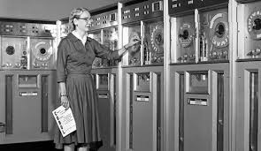

¿Que es Hardware?
el hardware son los objetos y partes que forman una máquina y que puedes ver y tocar. Sin hardware, no podrías usar el software, que es el conjunto de programas y aplicaciones que haces funcionar en esos dispositivos.
LAS MUJERES EN EL MUNDO DE LA COMPUTACION
A traves de la historia de la humanidad y sus inmensiones, hay una que se esta tomando un amplio campo en la actulidad, y es la inmension de las computadoras. Estas han llegado a cambiar en su totalidad la experiencia tanto personal, laboral y educativa....etc de las personas.
Tras la llegada de las computadoras se pudo optimizar trabajos que antes tomaban un tiempo mas de aplicacion y por ende de realizacion. Pero para esto hubieron ciertas personas que pusieron sus primeros simientos, claramente esta el sexo masculino, aportes muy importantes que no se pueden desmeritar. Pero en este caso nos enfocaremos en el sexo femenino, en las mujeres que tambien ayudaron a la inmesion e innovasion de la computadora, sin ellas el mundo y avance de la computacion fuera sido totalmente diferente.
Teniendo en cuenta esto, ¡hablaremos un poco de ellas!
Da click, para ir directamente a:
2.Evelyn B
3.Stephanie S
4.Mary W
Aprendizaje y Reflexion
1.GRACE MURRAY HOPPER:
Grace Hopper, mujer con una amplia trayectoria de vida, fue cientifica computacional y militar de Estados Unidos. pionera y tesa en las ciencias de la computacion. Una de las primeras programadoras en usar el Mark I
Considerada, madre de la programacion y creadora del Lenguaje Común Orientado a Negocios(COBOL),considerado uno de los primeros programas complejos de ordenador.

2.EVELYN BEREZIN:
Fue una mujer fisica, informatica y empresaria de Estados Unidos, quien es llamada la madre de los procesadores de texto. uno de sus mas reconocidos proyectos fue el desarrollo del primer sistema computarizado de reserva o guardado de billetes de lineas aéreas, para la empresa United Airlines. En 1953, creo el
.jpg)
3.STEPHANIE SHIRLEY:
Una mujer filantropa britanica, empresaria informatica. considerda la primera mujer en fundar en 1962 una empresa de programacion llamada Freelance Programmers Ltda

4.MARY ALLEN WILKES
Mujer abogada, programdora e ingeniera de hardware, fue una de las mujeres que colaboro en la creacion del primer ordenador personal en el año 1961. Es considera la primera persona en utilizar un computador en casa y para el teletrabajo
APRENDIZAJE Y REFLEXION
Teniendo en cuenta toda la trayectoria de estas mujeres podemos decir y reflexionar sonbre todo el desarrollo tecnologico tanto de software como de hardware, que se a desarrollado con ayuda ayuda de las mujeres y como tal tamnien de los hombres, se puede rescatar que para este campo de accio, cualquiera se puede embarcar y generar soluciones para sociedad en si misma. gracias a todas estas personas hoy por hoy conocemos lo que es llamado software y hardware en la actualidad.
¿Quien soy?
Mi nombre es Dario Andres Guerrero Cantillo, estudio Inginieria de Software y Datos, estoy comenzando este nuevo proyecto, y espero lograrlo. me encuentro en Orito-Putumayo, espero les guste esta pagina, soy novato pero pronto ire adquiriendo todos los conocimientos en esta area para asi poder mejorar mis proyectos, gracias.